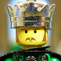

|
|
|
2 Samuel 2
|
|
| 2:1
And it came to pass after this, that David enquired of the LORD, saying,
Shall I go up into any of the cities of Judah? And the LORD said unto him,
Go up. And David said, Whither shall I go up? And he said, Unto Hebron. |
|
| 2:2
So David went up thither, and his two wives also, Ahinoam the
Jezreelitess, and Abigail Nabal's wife the Carmelite. |
  (2:2) (2:2)
"David went up thither, and his two wives also."
David
Becomes King of Judah
|
| 2:3
And his men that were with him did David bring up, every man with his
household: and they dwelt in the cities of Hebron.
|
| 2:4
And the men of Judah came, and there they anointed David king over the
house of Judah. And they told David, saying, That the men of Jabeshgilead
were they that buried Saul.
|
| 2:5
And David sent messengers unto the men of Jabeshgilead, and said unto
them, Blessed be ye of the LORD, that ye have shewed this kindness unto your
lord, even unto Saul, and have buried him. |
|
| 2:6
And now the LORD shew kindness and truth unto you: and I also will requite
you this kindness, because ye have done this thing. |
|
| 2:7
Therefore now let your hands be strengthened, and be ye valiant: for your
master Saul is dead, and also the house of Judah have anointed me king over
them. |
|
| 2:8
But Abner the son of Ner, captain of Saul's host, took Ishbosheth the son of Saul, and brought
him over to Mahanaim; |
 (2:8-9) "Abner ... captain of Saul's host, took Ishbosheth the son of Saul ...
and made him king ... over all Israel." (2:8-9) "Abner ... captain of Saul's host, took Ishbosheth the son of Saul ...
and made him king ... over all Israel."
Some of Saul's family survived. Indeed, Ishbosheth (Saul's son) was made king of Israel.
Did Saul's family die with him?
Ishbaal Becomes King of Israel
|
| 2:9
And made him king over
Gilead, and over the Ashurites, and over Jezreel, and over Ephraim, and over
Benjamin, and over all Israel.
|
| 2:10
Ishbosheth Saul's son was forty years old when he began to reign over
Israel, and reigned two years. But the house of Judah followed David.
|
| 2:11
And the time that David was king in Hebron over the house of Judah was
seven years and six months.
|
| 2:12
And Abner the son of Ner, and the servants of Ishbosheth the son of Saul,
went out from Mahanaim to Gibeon. |
Civil War
Erupts
|
| 2:13
And Joab the son of Zeruiah, and the servants of David, went out, and met
together by the pool of Gibeon: and they sat down, the one on the one side
of the pool, and the other on the other side of the pool.
|
| 2:14
And Abner said to Joab,
Let the young men now arise, and play before us. And Joab said,
Let them arise. |
 (2:14-16) "Let the young men ... play before us."
(2:14-16) "Let the young men ... play before us."
Joab and Abner watch as the young men
"play" a cruel game. "And they caught every one his fellow by the
head, and thrust his sword in his fellow side, so they fell down together."
|
| 2:15
Then there arose and went over by number twelve of Benjamin, which
pertained to Ishbosheth the son of Saul, and twelve of the servants of
David.
|
| 2:16
And they caught every
one his fellow by the head, and thrust his sword in his fellow's side;
so they fell down together: wherefore that place was called
Helkathhazzurim, which is in Gibeon. |
|
| 2:17
And there was a very sore battle that day; and Abner was beaten, and the
men of Israel, before the servants of David. |
|
| 2:18
And there were three sons of Zeruiah there, Joab, and Abishai, and Asahel:
and Asahel was as light of foot as a wild roe. |
|
| 2:19
And Asahel pursued after Abner; and in going he turned not to the right
hand nor to the left from following Abner. |
|
| 2:20
Then Abner looked behind him, and said, Art thou Asahel? And he answered,
I am. |
|
| 2:21
And Abner said to him, Turn thee aside to thy right hand or to thy left,
and lay thee hold on one of the young men, and take thee his armour. But
Asahel would not turn aside from following of him. |
|
| 2:22
And Abner said again to Asahel, Turn thee aside from following me:
wherefore should I smite thee to the ground? how then should I hold up my
face to Joab thy brother? |
|
| 2:23
Howbeit he refused to turn aside: wherefore Abner with the hinder end of
the spear smote him under
the fifth rib, that the spear came out behind him; and he fell down
there, and died in the same place: and it came to pass, that as many as came
to the place where Asahel fell down and died stood still. |
 (2:23) "Abner ... smote him under the fifth rib."
(2:23) "Abner ... smote him under the fifth rib."
Abner smites Asahel "under the fifth
rib." It seems that in 2 Samuel this is the preferred place to get smitten.
(see also 3:27, 4:6, 20:10)
|
| 2:24
Joab also and Abishai pursued after Abner: and the sun went down when they
were come to the hill of Ammah, that lieth before Giah by the way of the
wilderness of Gibeon. |
|
| 2:25
And the children of Benjamin gathered themselves together after Abner, and
became one troop, and stood on the top of an hill. |
|
| 2:26
Then Abner called to Joab, and said, Shall the sword devour for ever?
knowest thou not that it will be bitterness in the latter end? how long
shall it be then, ere thou bid the people return from following their
brethren? |
|
| 2:27
And Joab said, As God liveth, unless thou hadst spoken, surely then in the
morning the people had gone up every one from following his brother. |
|
| 2:28
So Joab blew a trumpet, and all the people stood still, and pursued after
Israel no more, neither fought they any more. |
|
| 2:29
And Abner and his men walked all that night through the plain, and passed
over Jordan, and went through all Bithron, and they came to Mahanaim. |
|
| 2:30
And Joab returned from following Abner: and when he had gathered all the
people together, there lacked of David's servants nineteen men and Asahel. |
|
| 2:31
But the servants of David had smitten of Benjamin, and of Abner's men, so
that three hundred and threescore men died. |
|
| 2:32
And they took up Asahel, and buried him in the sepulchre of his father,
which was in Bethlehem. And Joab and his men went all night, and they came
to Hebron at break of day.
|
|
|